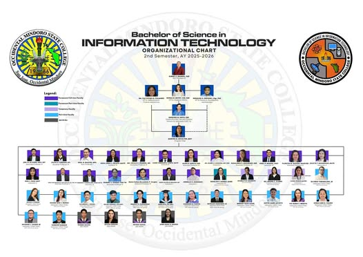

Chapter II: Company Profile
Overview of the organization, its mission, vision, history, and structure.
A. Nature of Agency
Occidental Mindoro State College San Jose Campus is a public educational institution located in San Jose, Occidental Mindoro. It is one of the campuses of Occidental Mindoro State College (OMSC).
The San Jose campus mainly offers courses in Teacher Education, Information Technology, and Midwifery. It is recognized by the Commission on Higher Education (CHED).
The institution continues to provide quality education and produce highly skilled graduates.
B. Mission, Vision, Core Values & Goals
MISSION
OMSC is committed to produce intellectual and human capital by developing excellent graduates through outcomes-based instruction, relevant research, responsive technical advisory services, community engagement, and sustainable production.
VISION
A premier higher education institution that develops globally competitive, locally responsive, innovative professionals and life-long learners.
CORE VALUES
Obedience to God: Spiritual integrity in service.
Mindfulness: Responsible and gender-sensitive service.
Service-Orientedness: Commitment to public service.
Commitment: Dedication to institutional goals.
Integrity & Ingenuity: Honesty and innovation.
Accountability: Responsibility and transparency.
Nationalism: Contribution to national development.
GOALS
• Quality academic programs
• Excellent board performance
• Faculty development
• Student development
• Research productivity
• Community engagement
• Good governance
C. History / Background
Occidental Mindoro State College (OMSC) started in 1966 as San Jose Barrio High School. It was temporarily housed in a ten-room PTA (Parents Teachers Association) building inside the campus of a public elementary school in Poblacion, San Jose.
At that time, there was no library room, and students borrowed books from Ms. Arsenia Santos and Ms. Avelina Noble.
Two years later, a ten-room Marcos-type prefabricated building was constructed within the former Bureau of Lands compound. However, there was still no designated library, and students continued borrowing books from school personnel.
The school later became San Jose Municipal High School as it was funded by the municipal government. In 1971, it was elevated to a national high school.
During School Year 1972–1973, a formal library was finally established at San Jose National High School (SJNHS), with Ms. Pacita M. Candelario appointed as librarian.
In 1974–1975, a new administration building was constructed, providing a more spacious library. Additional books, encyclopedias, newspapers, and magazines were acquired, along with improved furniture and facilities.
In 1983, through Batas Pambansa Blg. 531, the school was elevated into a national college, now known as Occidental Mindoro State College (OMSC).
This led to the expansion of library resources to support college-level education. Over the years, leadership changes contributed to the continuous development of the institution and its services.
New buildings were constructed, more learning materials were acquired, and the library system expanded across campuses including Labangan, Mamburao, Murtha, and Lubang.
The library continued to grow with the increasing student population, offering both physical and digital resources such as books, e-books, and e-journals.
By 2019, the library had accumulated more than 43,000 volumes of books serving students across different campuses.
Today, the OMSC Library remains an essential part of the institution, supporting academic excellence and providing quality learning resources to students and faculty.
D. Organizational Structure
